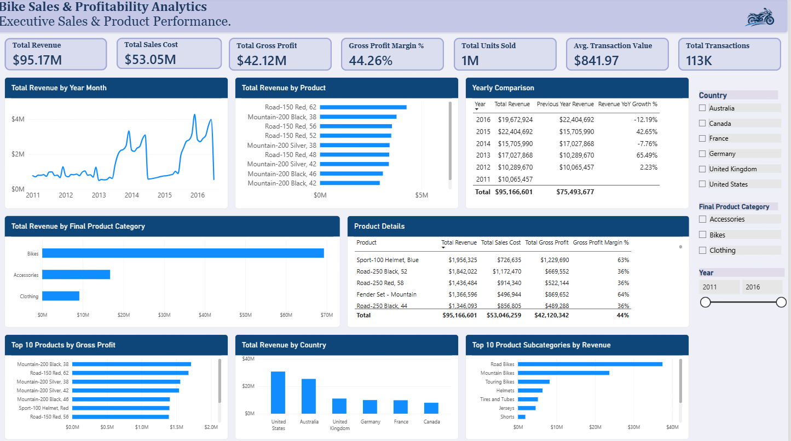
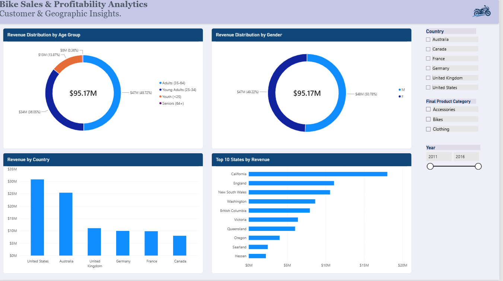

Bike Sales & Profitability Analytics
Power BI | Power Query | DAX | Data Modeling
Developed a two-page Power BI report analyzing 113,029 sales records from 2011 to 2016. The dashboards explore sales, gross profit, product performance, customer demographics, and geographic trends.
Project Highlights
Cleaned and validated sales data in Power Query, developed financial calculations, built a star-schema-style data model, and created DAX measures for key performance indicators and year-over-year growth.
The report includes an Executive Sales & Product Performance page and a Customer & Geographic Insights page.
Explore My Power BI Dashboards
View the two dashboards developed for my Bike Sales & Profitability Analytics project. Click either image to view it at full size.
Executive Sales & Product Performance

Sales KPIs, profitability, revenue trends, and product performance.
Customer & Geographic Insights

Customer demographics, geographic revenue, and market insights.
Download Project Documentation
Explore the complete technical documentation and five major business insights from my Power BI project.
Key Business Insights
Sales & Profitability
The business generated $95.17M in revenue and $42.12M in gross profit, with a 44.26% margin.
Revenue Trends
Annual revenue peaked in 2015 at $22.40M. The July 2016 decline requires further investigation.
Product Performance
Bikes contributed approximately 73% of total revenue. Road-150 Red, 62 led individual products by revenue.
Customer Demographics
Adults aged 35–64 contributed the largest share of sales revenue, followed by ages 25–34.
Geographic Performance
The United States was the highest-revenue country, while California led the state-level ranking.
Connect With Me
Explore my projects and follow my progress in data analytics.
View My GitHub Connect on LinkedIn